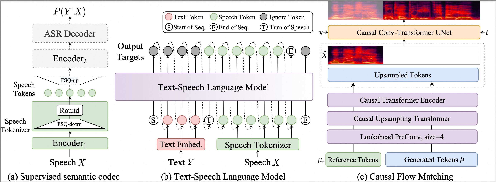

CosyVoice 2: Scalable Streaming Speech Synthesis with Large Language Models
[Paper] [Code] [HuggingFace] [ModelScope]
FunAudioLLM Team
SpeechLab@Tongyi, Alibaba Group
Abstract: In our previous work, we proposed CosyVoice, a multilingual speech synthesis model based on supervised discrete speech token. By performing progressive semantic decoding with two popular generative models: language models (LMs) and Flow Matching, CosyVoice achieved high prosody naturalness, content consistency, and speaker similarity in speech in-context learning. Recently, there have been significant advancements in multi-modal large language models (LLMs), in which the response latency and real-time factor of speech synthesis play a crucial role in the interactive experience. Therefore, in this work, we introduce an improved streaming speech synthesis model, CosyVoice 2, with comprehensive and systematic optimizations. Firstly, we introduce finite-scalar quantization to improve the codebook utilization of speech tokens. Secondly, we simplify the model architecture of the text-speech LM, so as the pre-trained LLMs can be directly used as the backbone. Additionally, we also design a chunk-aware causal flow matching model to accommodate different synthesis scenarios. As a result, we can perform the streaming and non-streaming synthesis within a single model. By training on a large-scale multilingual dataset, CosyVoice 2 achieves human-comparable synthesis quality with very low response latency and real-time factor.

Ultra-Low Latency: CosyVoice 2.0 introduces a large-scale voice generation model technology that integrates offline and streaming modeling, supporting bidirectional streaming speech synthesis. The first packet synthesis latency can reach 150ms with minimal loss in quality.
High Accuracy: Compared to CosyVoice 1.0, CosyVoice 2.0 reduces pronunciation errors in synthesized audio by 30% to 50%. It achieves the current lowest character error rate on the hard test set of the Seed-TTS evaluation set.
Strong Stability: CosyVoice 2.0 ensures excellent consistency in timbre for zero-shot voice generation and cross-language speech synthesis. It shows significant improvement in cross-language synthesis compared to version 1.0.
Natural Experience: The prosody, sound quality, and emotional alignment of the synthesized audio in CosyVoice 2.0 have significantly improved compared to version 1.0. The MOS evaluation score increased from 5.4 to 5.53 (with a comparable score of 5.52 for a commercialized large-scale speech synthesis model). Additionally, CosyVoice 2.0 has upgraded its controllable audio generation capabilities, supporting more granular emotional controls and dialect accent adjustments.
Contents
Zero-shot In-context Generation
| Language | Prompt | Generated 1 | Generated 2 |
|---|---|---|---|
| ZH | 对，这就是我，万人敬仰的太乙真人，虽然有点婴儿肥，但也掩不住我逼人的帅气。 |
突然，身边一阵笑声。我看着他们，意气风发地挺直了胸膛，甩了甩那稍显肉感的双臂，轻笑道："我身上的肉，是为了掩饰我爆棚的魅力，否则，岂不吓坏了你们呢？" |
不少人从四面八方赶来，只为目睹我的风采。看，他们眼中流露出的崇敬，足以让我感到自豪。我微微一笑，挥手致意，心中默念着：责任重大，不容懈怠。 |
啊，事情怎么这么多啊，明天又要开会了啊，做不完啊，说了你又不听，听又不懂，懂又不做，做又做错，错又不认，认又不改，改又不服，不服又不说，你说叫我怎么办 |
这次机会让我能够在新的领域中不断学习和成长，同时也激励我去克服自身的不足。 |
我觉得这种运动其实不是说靠机会的，我觉得对每个人来讲，像我们歌手来讲，我觉得其实都是你要自己去努力，然后才可以达到自己的梦想。 |
|
周日被我射熄火了，所以今天是周一。 |
有一种撕心裂肺的感觉，是辣椒，我加了辣椒！ |
新的一周开始了，我计划好好利用这段时间来完成手头的工作和项目。 |
|
今夜的月光如此清亮，不做些什么真是浪费。随我一同去月下漫步吧，不许拒绝。 |
梯度是一个多变量微积分中的概念，用于描述一个标量场在某一点处的最大变化率，以及变化最快的方向。在物理学中，梯度通常用来表示某个物理量的空间变化情况。 |
在这宁静的夜晚，我们可以沿着小路慢慢走，感受微风拂面的轻柔，与自然融为一体。 |
|
| EN | I think people online have actually assembled videos showing every launch and it just gets like crazy fast as you get to twenty twenty three. So yeah, so we've done a nineteen three flight. We're now qualifying Falcon nine to be able to do forty flights. |
In the quest for sustainable energy, Tesla leads the charge; every electric vehicle on the road is an emissary saluting clearer skies, collectively weaving the tapestry of our planet's verdant future. |
From space exploration to subterranean tunnels, from AI to the neurotechnology revolution, my pursuit transcends mere technological frontiers; it's about carving out unprecedented realms of existence and progress for mankind. |
I'm so happy I got to do this. I really wanted to work with Tom Hooper. I know that he records live and he films and records your vocals live. It's such an interesting thing to me and I wanted to see him work. I had actually done screen tests for Les Mis. |
Every stage is a fresh adventure, and as the lights ignite, it's an unspoken pact between me and the audience, weaving unforgettable nights where dreams meet reality. |
Creating is my way of extracting magic from life's moments. Whether it's joy or tears, I embrace it all, transmuting those feelings into notes, with the hope of touching the depths of every soul. |
|
| JP | の匂いを嗅ぎつけて現場に赴き、モテる感覚の全てを使って犯人を割り出し、食らいついたら相手が観念するまで証拠という鋭い歯を食い込ませるそれが探偵さん。 |
投資で安定収入を得たい人達で情報交換をしませんか？ |
自分でもユナに提案してからやっぱり暑すぎるか。 |
どうして、どうしてお姉ちゃんを助けてくれなかったの？ |
クレジットカード現金化の店舗のスタッフブログです。 |
某ハンドメイドブログの別館ともなっております。 |
|
| KO | 괴로우나 즐거우나. |
장로와 다른 교인들이 들어와 병원으로 가기를 번차례로 권하였다. |
비상한 흥분과 그 흥분에 반비례되는 시원치 않은 결과, 이러한 불만의 십 년이 지났습니다. |
그는 무슨 난처한 일이나 있는 듯이 유쾌하지 못한 표정으로 술만 따른다. |
그날 저녁에 실례한 것은 이 사람이었소이다. |
기천은 상을 물리고 담배를 붙여 물었다.. |
Crosslingual In-context Generation
| ZH | EN | JP | KO |
|---|---|---|---|
老兵不死，只会逐渐凋零 |
Old soldiers never die; they just fade away. |
老兵は死なず、ただ消え去るのみ。 |
노병은 죽지 않고, 다만 사라져갈 뿐이다. |
在那之后，完全收购那家公司。因此，保持管理层的一致性，利益与即将加入家族的资产保持一致，这就是我们有时不买下全部的原因。 |
And then later on, fully acquiring that company. So keeping management in line, interest in line with the asset that's coming into the family is a reason why sometimes we don't buy the whole thing. |
その後、その会社を完全に買収する。だから、経営陣を一列に並べ、家族に入る資産との利益を一致させることが、私たちが全てを買わない理由の一つです。 |
그리고 나중에, 그 회사를 완전히 인수하게 됩니다. 그래서 경영진을 일치시키고, 가족에 들어오는 자산과의 이익을 일치시키는 것이 우리가 가끔 전부를 사지 않는 이유입니다. |
只是雨滴有什么麻烦的？这还没有打雷呢！ |
Rainfall alone does not constitute a storm. Thunder is required. |
雨なんて大したことありません。まだ雷も鳴っていないのですから。 |
고작 빗방울로 호들갑은, 아직 번개도 치지 않았는데. |
如果能对小事感到感激和满足，那他就是幸福的人。 |
If one knows how to be grateful and content with small things, then he is a happy person. |
小さなことに感謝し満足することができれば、その人は幸せな人です。 |
작은 것을 가지고도 고마워하고 만족할 줄 안다면 그는 행복한 사람이다. |
Mixlingual In-context Generation
| Prompt | Generated |
|---|---|
晴空万里不如你心情愉悦，今天有什么开心的事吗？ |
你昨天的 presentation がよかったので, 오늘도 좋은 피드백을 받을 거예요。 |
그런 걸 별짓을 다해 가면서 억지루 시작을 했었지요. |
최근에 한국어를 배우기 시작했어, I find it fascinating, 特に文化の違いを理解するのが 재미있어. |
…덥다… 이렇게 독한 햇빛이라면 서리꽃도 녹아버리겠지…? 아, 생각해보니까 그럴 일은 없겠네. 하하… 아, 으윽… |
生活は簡単ではないが, happiness 是自己追求的 목표, 맞죠? |
The world looks glorious in the snow. Pure white, like the light of the moon. A perfect backdrop for bloodshed. |
내일의 meeting は几点开始？一緒に行きますか? |
Emotionally Expressive Voice Generation
| Emotion | Prompt | Generated |
|---|---|---|
| Happy | 能和大家在一起，我好开心啊。 |
不久以后，王后果然生下了一个可爱的小公主。 |
| Sad | Dogs are sitting by the door. |
Their heads lowered and eyes drooping, letting out soft whimpers as they wait for their owner to return. |
| Surprise | 天呐，这么好一部小说，竟然出自一个怨碎的小作者之手。 |
进入小木屋后，里面竟然整齐排列着七张小小的床！ |
| Neutral | Dogs are sitting by the door. |
Their expressions steady and unmoved, simply observing the world outside with quiet interest. |
| Angry | 刚才还好好的，一眨眼又消失了，真的是要气死我了。 |
可恶的恶魔！你胡作非为，竟敢抓走公主。 |
Disclaimer
The content provided above is for academic purposes only and is intended to demonstrate technical capabilities. Some examples are sourced from the internet. If any content infringes on your rights, please contact us to request its removal.